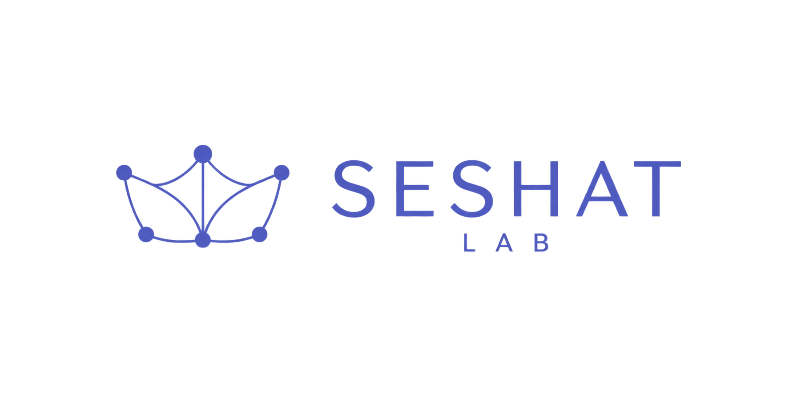

← HomeRESEARCH OUTPUT
Publications
Peer-reviewed research at the intersection of language, science, innovation, and open-source communities.
JOURNAL & CONFERENCE PAPERS
CONFERENCE PRESENTATIONS

← HomeRESEARCH OUTPUT
Peer-reviewed research at the intersection of language, science, innovation, and open-source communities.